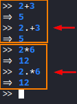
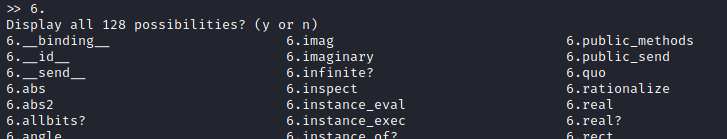

Numbers
Numbers• Every value in Ruby is an object.
So even
the simple operations between numbers are operations between objects.
• Every object value in Ruby can use
public methods of its object class. So the usual operations(+,-,%,*,/,**) are method invocation too.
In Ruby
to call an object method, we need to use the point notation.
This mean that we can use the point notation also
on operations on numbers
2+2 < -- > 2.+2
 To display all the methods of the integer class
 If a method ends with a
question mark, it means that the returning value is a Boolean (true or false)
Bibliography:
•
http://ruby-doc.org/core-1.9.3/Integer.html•
https://www.geeksforgeeks.org/ruby-integer-class/